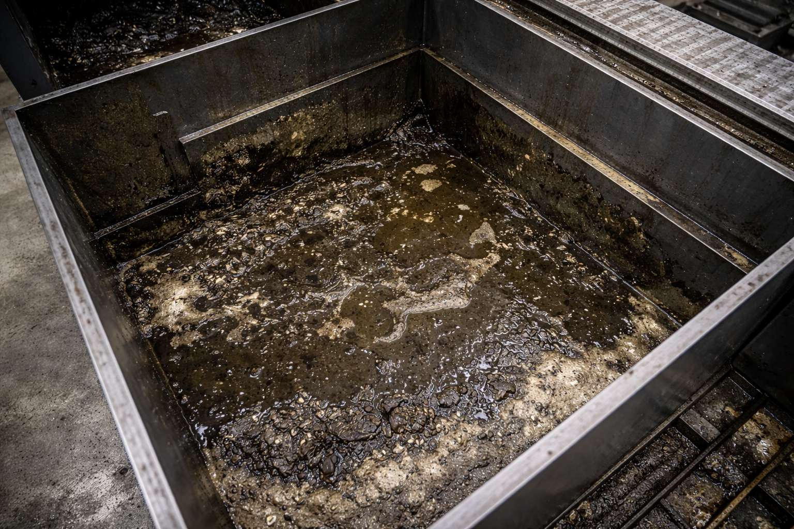

Servicio profesional de limpieza industrial para máquinas CNC, centros de mecanizado y tornos CNC. Realizamos limpieza de tanques, eliminación de lodos, retirada de virutas y limpieza de sistemas de refrigeración y taladrina para mejorar el rendimiento y prolongar la vida útil de la maquinaria.
En CNC Systems realizamos trabajos especializados de limpieza de máquinas CNC industriales en todo tipo de instalaciones productivas. La acumulación de residuos, lodos, aceites y partículas metálicas puede provocar averías, problemas de refrigeración, pérdida de precisión y un desgaste prematuro de la maquinaria.
Nuestro servicio de limpieza CNC está orientado a maximizar la productividad y reducir incidencias en centros de mecanizado, tornos CNC, fresadoras, maquinaria industrial y líneas automatizadas.

Ejemplo de depósito CNC con acumulación de residuos y contaminación por falta de mantenimiento.
Uno de los principales problemas en maquinaria CNC industrial es la acumulación de lodos y residuos en los depósitos de refrigerante y taladrina. La contaminación del fluido puede generar malos olores, bacterias, pérdida de capacidad refrigerante y obstrucciones en bombas y conductos.
Realizamos limpieza integral de tanques CNC mediante extracción de residuos, limpieza interior del depósito y saneamiento del sistema para recuperar unas condiciones óptimas de trabajo.
Limpieza TanquesLos centros de mecanizado CNC requieren un mantenimiento periódico para evitar acumulaciones de residuos en zonas críticas. La suciedad puede afectar a guías, husillos, sensores, cambiadores de herramientas y sistemas de refrigeración.
Nuestro equipo técnico realiza limpieza industrial adaptada a cada máquina, utilizando procedimientos seguros y compatibles con equipos FANUC, Siemens, Heidenhain, FAGOR y otros controles industriales.
La limpieza de tornos CNC es fundamental para garantizar mecanizados precisos y evitar incidencias derivadas de la acumulación de aceite, partículas metálicas y restos de material.
Trabajamos tanto en tornos CNC horizontales como verticales, realizando limpieza de interiores, sistemas de refrigeración, depósitos y zonas de evacuación de viruta.
Los lodos generados durante el mecanizado son uno de los principales focos de contaminación en maquinaria CNC. Estos residuos afectan directamente a la eficiencia de la producción y pueden terminar dañando componentes mecánicos y eléctricos.
En CNC Systems realizamos procesos de eliminación de residuos industriales adaptados a cada instalación para recuperar el correcto funcionamiento de la maquinaria.
Una correcta limpieza industrial CNC forma parte del mantenimiento preventivo de cualquier planta de producción. Reducir la suciedad acumulada ayuda a disminuir averías, mejorar la vida útil de la máquina y mantener la precisión de mecanizado.
Además de la limpieza de maquinaria CNC, ofrecemos soporte técnico industrial, reparación electrónica, mantenimiento y retrofit de maquinaria CNC. Nuestro equipo cuenta con amplia experiencia en maquinaria industrial y automatización.
Trabajamos con fabricantes y controles CNC de referencia internacional, ofreciendo soluciones adaptadas a cada cliente y tipo de producción.
Depende del tipo de producción y uso de la maquinaria. En entornos industriales intensivos se recomienda realizar mantenimientos periódicos y limpieza preventiva de forma regular.
La taladrina contaminada puede provocar obstrucciones, bacterias, pérdida de refrigeración y averías en bombas y sistemas CNC.
Sí. Trabajamos con todo tipo de maquinaria CNC industrial, incluyendo centros de mecanizado, tornos CNC y maquinaria automatizada.
Sí. Una correcta limpieza industrial reduce acumulaciones de residuos y ayuda a prevenir problemas mecánicos y electrónicos.
🛠️ ¿Necesita realizar una limpeza?
Si necesitas realizar una limpieza de tanque en tu máquina CNC, contacta con nosotros. Mejoramos el rendimiento y evitamos averías derivadas de la contaminación del sistema de refrigeración.
📞 No dude en ponerse en contacto con nosotros.
También realizamos servicios complementarios como: